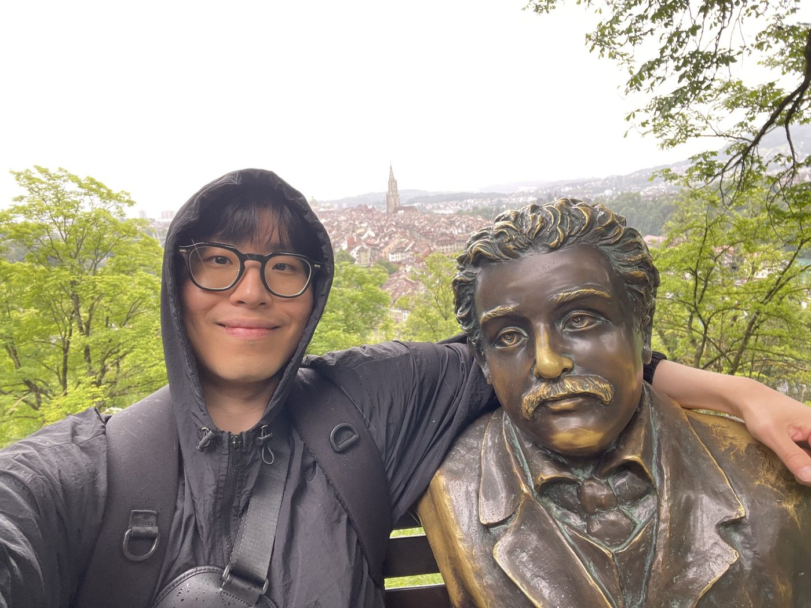
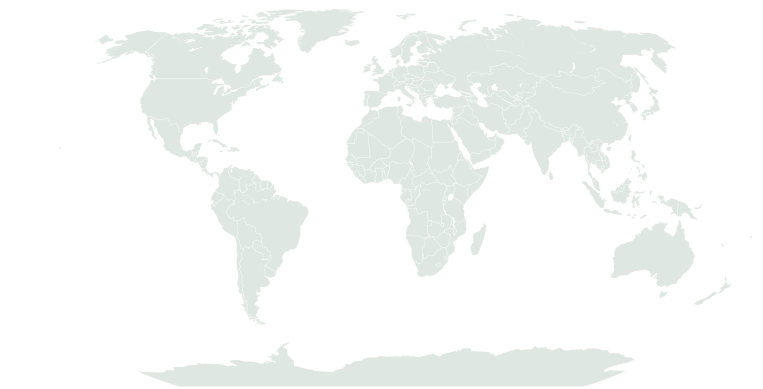

In development
Seoul Accent Lab
Exploring how speech representations and acoustic-phonetic evidence might support explainable Korean pronunciation feedback.
01 — Research
Supervisors: Prof. Alice Turk · Dr Benjamin Elie
Investigated whether Scottish English vowel-duration patterns could emerge from articulatory-planning cost optimisation. Used Python, XT/3C and SPARC on an HPC cluster; the /aɪ/ F1 findings were exploratory, while /u/ duration patterns remained inconsistent.
Analysed 104 target items from four Dinka speakers, measuring F0, formants, spectral tilt and vowel duration with Praat and R. Examined tone and voice-quality contrasts alongside speaker-level variability.
Trained and evaluated an HMM-based digit recogniser using HTK and 39-dimensional MFCC features. Tested the effects of microphone mismatch, accent variation and training-speaker counts on word error rates.
Adapted Ferragne et al.’s identification paradigm into a two-block jsPsych design with a proposed seven-step BROOD–BREWED continuum, context manipulation, headphone checks and confidence ratings. Designed and implemented as coursework; no participant data were collected.
Used provided Python models and iterated-learning simulations to explore how initial language structure, population turnover and transmission bottlenecks influence the emergence of compositionality.
Co-designed an artificial-language learning study with distraction and novel-suffix production conditions. Co-authored an IMRD-format mock article using hypothetical data; no participant data were collected.
Measured vowel formants, stop VOT and prosodic timing in MapTask recordings, and explored referring-expression length and disfluency with corpus annotation and statistical tests.
02 — Projects
A web-based demonstration of an experimental design for the Scottish Vowel Length Rule, adapted from an established perceptual paradigm. Explore the methodology and try the shortened original task.
Explore projectA rule-based generator of English syllable candidates under a simplified Sonority Sequencing Principle. Generate examples and inspect onset, nucleus and coda.
Explore projectA small Hidden Markov Model for English and Korean syllable-state decoding. Explore predicted onset, nucleus and coda states and the Viterbi lattice.
Explore projectExploring how speech representations and acoustic-phonetic evidence might support explainable Korean pronunciation feedback.
03 — About
I'm interested in experimental phonetics, experimental phonology, and computational linguistics. What interests me most is how well linguistic theories explain what actually happens in language, and how computational modelling can help bridge the gap between theory and observation.
When I study or explore something new, I tend to think about why before how. I believe that once I understand why something matters and find a good reason to pursue it, I can learn the skills and methods I need along the way. This way of thinking has shaped how I've approached linguistics and encouraged me to explore new areas and methods.
Recently, I've become interested in how artificial neural networks learn from human speech. I'm particularly curious about what linguistic patterns speech recognition models pick up, how that information is represented inside the models, and whether what they've learned can be applied to speech they've never encountered before. I'm also interested in what studying these models might teach us about human language itself.
Outside of research, I enjoy writing blog posts, reading, playing computer games, and rapping. I also like going to the gym and running. I love travelling too, and two of my favourite places I've visited are Santorini in Greece and Interlaken in Switzerland.
University of Edinburgh
MA (Hons) Linguistics and English Language
First-Class Honours (70.2/100, 4.0/4.0)
Graduated 2026
Python · R · JavaScript · HTML/CSS · Praat & scripting · jsPsych · HTK · MFA · NumPy · pandas · matplotlib · XT/3C · HPC (Grid Engine/Bash) · Git/GitHub · LaTeX

04 — Connect
For research, collaboration, or just a conversation about speech and language, feel free to reach out.
05 — Visitors
This map will light up as visitors stop by.

Only approximate visitor countries are recorded. No precise locations are displayed.